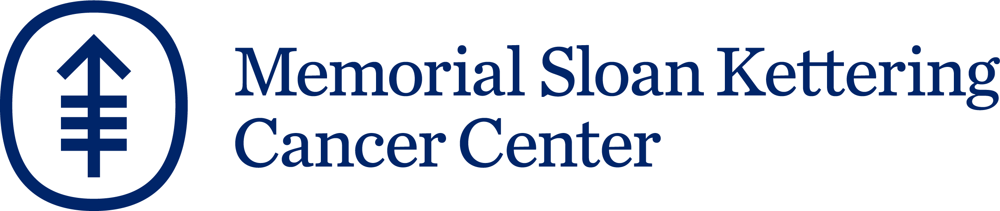
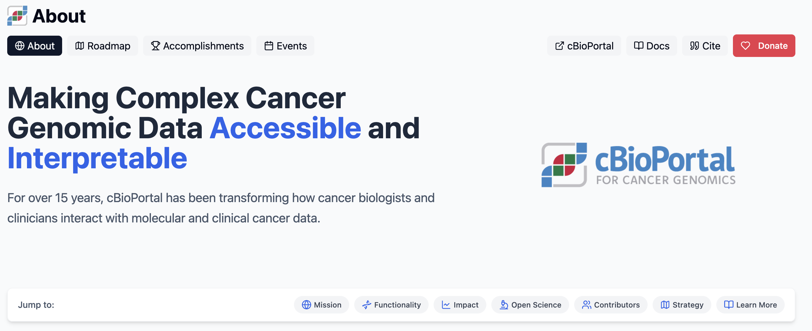
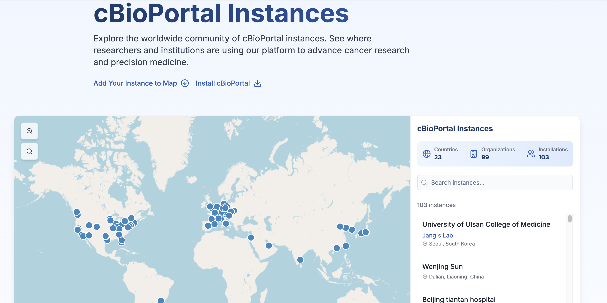
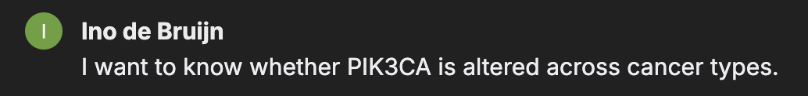
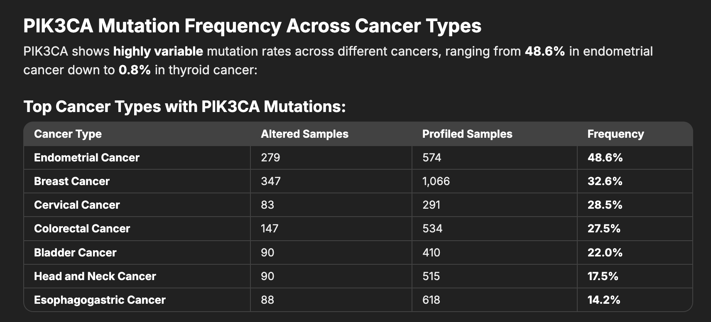
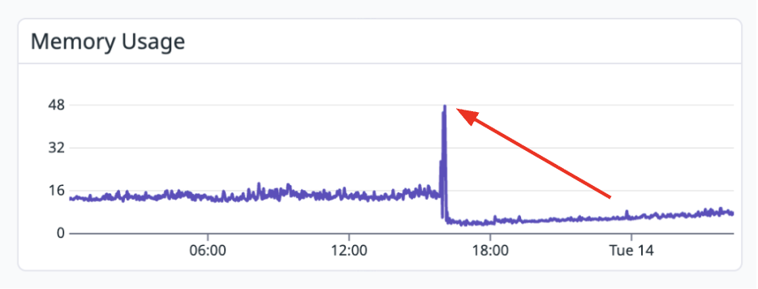

Cancer AI Conversations · May 26, 2026
AI-Assisted Vibe Coding
in Cancer Genomics
Ino de Bruijn, PhD
Data Visualization Team Lead | Cancer Data Science Initiative
Memorial Sloan Kettering Cancer Center

* this presentation was fully vibe-coded
Early 2025
Simple Web Pages — solved
Landing pages, dashboards, interactive maps — built in hours, not weeks.
🌐 about.cbioportal.org
AI-generated landing page, maintained through prompts.

🗺️ Installation Map
Originally a summer-long project — rebuilt by a new engineer in a few hours.

Models weren't yet good enough for a large existing codebase — but any WordPress-like site was already fully vibe-codeable.
Mid-2025
Features in a mature codebase
Claude Code launched May 2025. Agents could now navigate and extend 300K+ lines of existing code.
Example: New Similarity Maps feature for cBioPortal — fully vibe-coded with Claude Code.
- Agents read existing patterns, follow conventions, write tests
- Engineers who stopped coding day-to-day can ship features again
2026
Agents consuming our resources
💬 chat.cbioportal.org
Natural language → SQL over cancer genomics data. Unlocks access for non-programmers.


📈 Uninvited agent traffic
Agents don't paginate, don't rate-limit, make redundant calls. Had to spin up separate servers.

The API used to be for programmers. Now any researcher can point an agent at it.
Open Source
Open source under pressure
⚠️ Google Summer of Code 2026: Agents are so good at "good first issues" that evaluating candidates is near-impossible.
- Far more PRs — hard to keep up with review volume
- Agent-assisted contributions look like expert ones
- How do you mentor the next generation?
The Big Question
What should we build?
Before: our team built software for cancer researchers.
Now: researchers can build much of it themselves.
🗄️ Data organization
Nobody else will organize our data for us. Curation remains our job.
🔗 Integrated experiences
Chat + visualization + data is the new interface. Accuracy in our domain is the hard part.
📏 Benchmarks
Comprehensive test suites so any tool can be rewritten and validated. May matter more than the tool itself.
⚠️ The 95% illusion: a vibe-coded prototype looks nearly done — but maintenance, correctness, and collaborative development are the hard part.